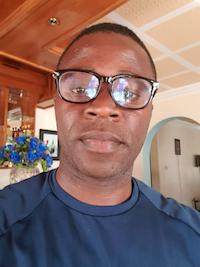

Michael Eno | WDD 130

Hello everyone, my name is Michael Eno, I am from Eket in Akwa Ibom state, Nigeria. I love to play music at my free time and I love home made foods. My best color is blue and white. Thats all for now. Thank you for reading.